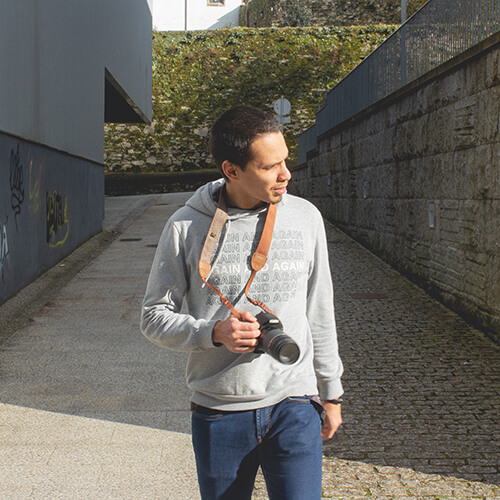

Diseñador gráfico
Soy diseñador desde 2016, y casi desde el mismo tiempo soy fotógrafo.
Egresado de la Universidad Arturo Michelena, Carabobo, Venezuela.
Ambas disciplinas son medios por los cuales soy capaz de expresar mis pensamientos, en una idea que puedo expresar de manera visual, incluso de manera física si la posibilidad existe.
Gracias a esto he podido crear junto a Jesús González un colectivo audiovisual llamado DiagoFrao Visual Crew, cuya premisa es la realización de proyectos audiovisuales con los recursos mínimos, esto motivado a nuestra realidad socio-económica en Venezuela. Destacando el uso equipos básicos como una cámara compacta y un softbox hecho a mano, allí construimos la poderosa idea que hasta ahora hemos impartido.
Por su puesto, el tiempo va pasando y la mejora de equipos se hace cada vez más presente para alcanzar niveles de calidad cada vez mayores.